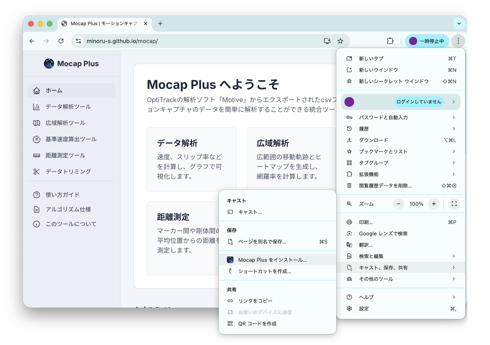
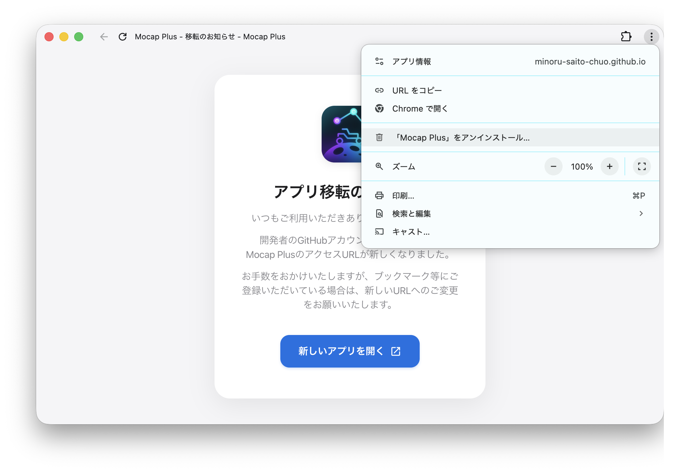
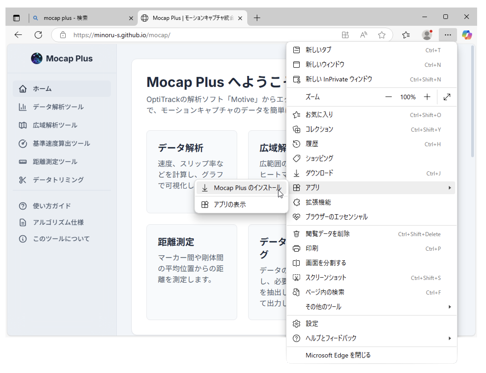
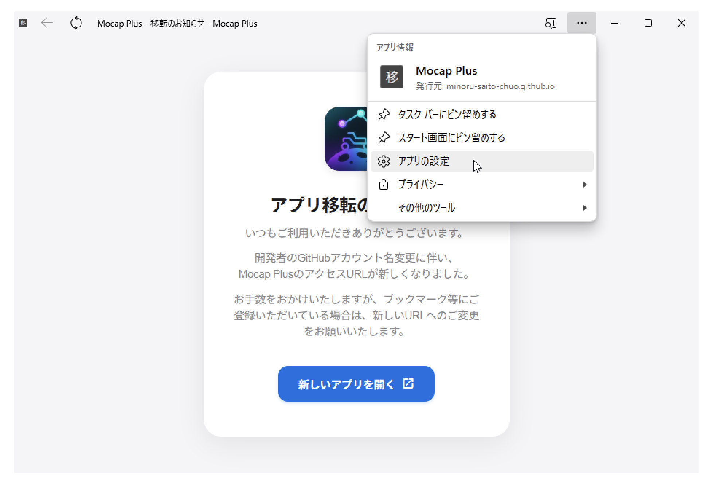
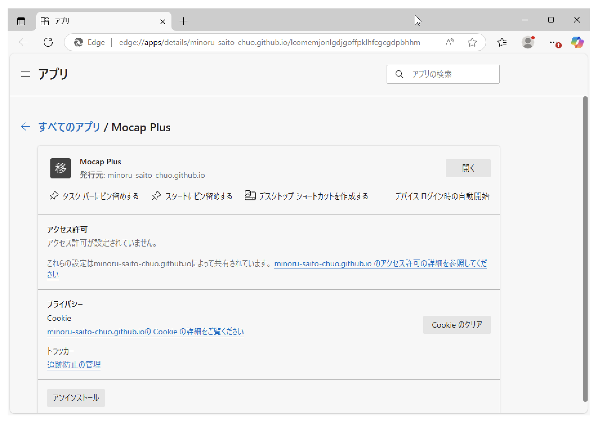
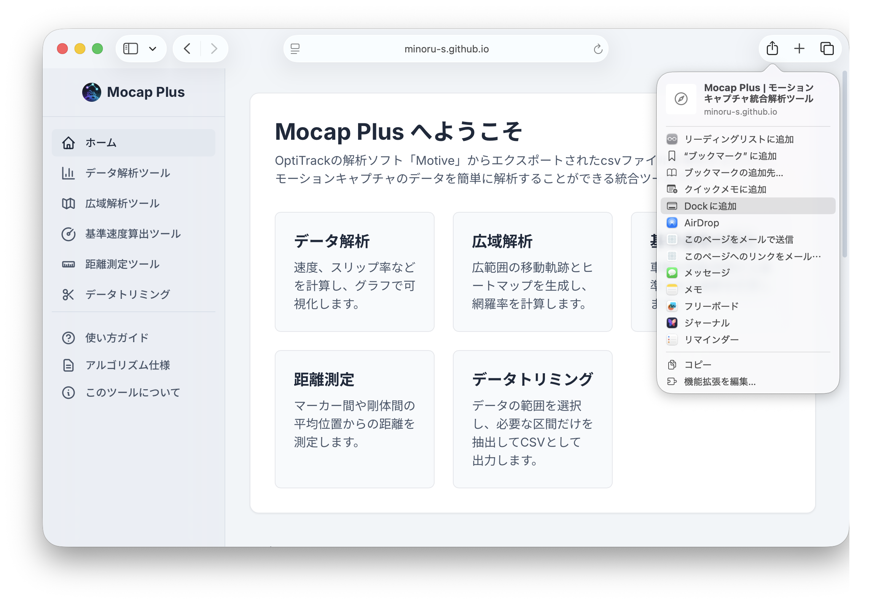
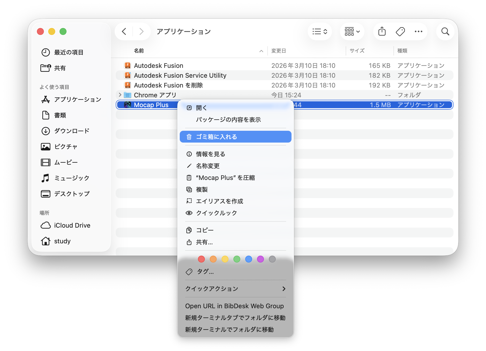

いつもご利用いただきありがとうございます。
開発者のGitHubアカウント名変更に伴い、
Mocap PlusのアクセスURLが新しくなりました。
お手数をおかけいたしますが、ブックマークなどにご登録いただいている場合は、新しいURLへのご変更をお願いいたします。
新しいアプリをインストールする：Google Chromeでhttps://minoru-s.github.io/mocap/にアクセスし，Chromeの右上のメニューから「キャスト、保存、共有」を選択し，「Mocap Plusをインストール…」を押下する．

古いアプリをアンインストールする：移転のお知らせが出ている古いアプリのウィンドウの右上のメニューから，「Mocap Plusをアンインストール…」を押下する．

新しいアプリをインストールする：Microsoft Edgeでhttps://minoru-s.github.io/mocap/にアクセスし，Edgeの右上のメニューから「アプリ」を選択し，「Mocap Plusのインストール」を押下する．

古いアプリをアンインストールする①：移転のお知らせが出ている古いアプリのウィンドウの右上のメニューから，「アプリの設定」を押下する．

古いアプリをアンインストールする②：アプリの設定画面の左下にある「アンインストール」を押下する．

新しいアプリをインストールする：Safariでhttps://minoru-s.github.io/mocap/にアクセスし，Safariの右上のメニューから選択し，「Dockに追加」を押下する．

古いアプリをアンインストールする：Finderで「ユーザ名/アプリケーション」を開き，古い方のMocap Plusをゴミ箱に入れる．※アイコンも名称も同じため削除する前に一度開き，古い方がどちらであるかを確認しておくと良い．
